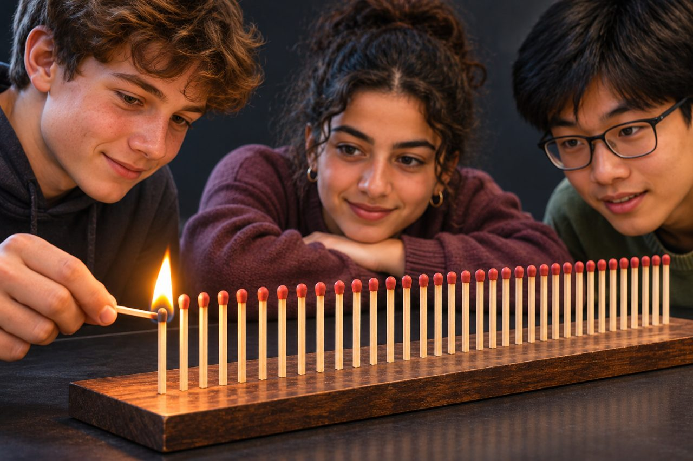
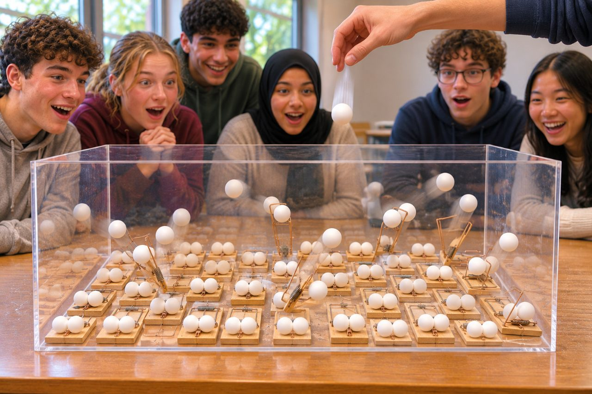

Von einer Spaltung zu vielen
Auf einem Brett stehen Streichhölzer in einer langen Reihe, dicht an dicht. Jonas zündet das erste an. Die Flamme springt auf das Nachbarholz über, dann auf das nächste – bis alle brennen. Ein einziger Funke setzt eine ganze Kette in Gang.

Erinnere dich an Modul 1: Ein trifft einen -Kern. Der Kern zerbricht in zwei . Dabei werden Energie und γ-Strahlung frei – und 2 oder 3 neue Neutronen.
Jedes neue Neutron kann wieder einen Uran-235-Kern treffen. Auch dieser Kern zerbricht – und liefert noch mehr Neutronen. So reiht sich an Kernspaltung. Das nennt man eine .
Im Bild unten trifft jedes Neutron einen Kern: Aus 1 Spaltung werden 3, dann 9, dann 27. Die Zahl der Spaltungen wächst . In Bruchteilen einer Sekunde gibt es viele Millionen Spaltungen – und eine gewaltige Menge Energie.
MERKE
- Bei jeder Kernspaltung entstehen 2 oder 3 neue Neutronen.
- Diese Neutronen können weitere Uran-235-Kerne spalten. So entsteht eine Kettenreaktion.
- Die Zahl der Spaltungen wächst rasend schnell (1 → 3 → 9 → 27 …). In Bruchteilen einer Sekunde wird eine gewaltige Energiemenge frei.
Wie eine Kettenreaktion entsteht
Tippe zuerst auf eine Lücke, dann auf das passende Wort. Zwei Wörter bleiben übrig.
Modellversuche: Streichhölzer und Mausefallen
Das Streichholz-Modell. Streichhölzer stecken dicht nebeneinander in einem Brett. Zündet man eines an, entzündet seine Flamme die Nachbarhölzer. Diese zünden wieder ihre Nachbarn an – bis alle abgebrannt sind. Ein Streichholz steht für einen Urankern, die Flamme für die Neutronen.
Wie stoppt man das Feuer? Man lässt Lücken zwischen den Hölzern. Dort springt die Flamme nicht weiter. Im Kernreaktor übernehmen das die Regelstäbe: Sie fangen Neutronen weg (Station 3).

Denk mal nach: Ein einziger Ball fällt in den Kasten. Warum fliegen nach kurzer Zeit überall Bälle herum?
Das Mausefallen-Modell. In einer Kiste liegen viele gespannte Mausefallen. Auf jeder liegen zwei Tischtennisbälle. Fällt ein Ball hinein, schnappt eine Falle zu und schleudert ihre zwei Bälle weg. Diese lösen die nächsten Fallen aus – und so weiter.
Eine gespannte Falle steckt voller Energie – wie ein Urankern. Die Bälle spielen die Neutronen. Ein zeigt so, was im Atomkern viel zu klein und viel zu schnell abläuft, um es zu sehen.
Tippe Streichhölzer an, um sie herauszunehmen oder wieder einzusetzen. Dann zünde an: Das Feuer springt immer zum Nachbarholz links, rechts, oben und unten. Probiere zwei Dinge aus: 1. Alle Hölzer brennen ab. 2. Eine Lücke stoppt das Feuer.
MERKE
- Modellversuche zeigen die Kettenreaktion: Streichholz oder Mausefalle = Urankern, Flamme oder Ball = Neutron, Anzünden oder Zuschnappen = Kernspaltung.
- Ohne Lücken läuft die Kette ungebremst durch: Alles brennt ab, alle Fallen schnappen zu.
- Lücken stoppen die Kette – im Reaktor machen das die Regelstäbe.
Modell und Wirklichkeit
Tippe links etwas aus dem Modell an und dann rechts, wofür es steht.
Erkläre in eigenen Worten ✨ KI prüft
Schreibe ganze Sätze oder Stichpunkte. Die KI achtet nur auf den Inhalt, nicht auf die Rechtschreibung.
Gesteuert oder ungesteuert
Was eine Kettenreaktion braucht: freie Neutronen und genug Uran-235 auf engem Raum. Ist zu wenig Uran-235 da, fliegen die meisten Neutronen hinaus oder werden von Uran-238 geschluckt. Die Kette erlischt. Die Mindestmenge, ab der sie von selbst weiterläuft, heißt .
Natürliches Uran besteht nur zu 0,7 % aus Uran-235. Für Kernkraftwerke wird es : auf etwa 3 bis 4 % Uran-235.
Ungesteuert: Jede Spaltung löst mehrere neue aus. Die Zahl der Spaltungen wächst lawinenartig, die Energie wird schlagartig frei – so in der Atombombe. Gesteuert: Von den 2 oder 3 neuen Neutronen löst im Mittel genau eines eine neue Spaltung aus. Die Zahl der Spaltungen bleibt gleich, die Energie wird gleichmäßig frei – so im .
Der Moderator bremst. Die neuen Neutronen sind sehr schnell. Schnelle Neutronen werden von Uran-235 kaum eingefangen. Darum ist im Reaktor zwischen den Brennstäben Wasser. Die Neutronen stoßen mit den Wasserteilchen zusammen und werden langsamer. Langsame Neutronen spalten Uran-235 viel besser. Das Wasser ist der . So heißt jeder Stoff, der Neutronen abbremst – zum Beispiel Wasser, in manchen Reaktoren auch .
Die Regelstäbe fangen ein. (auch Steuerstäbe genannt) enthalten und . Diese Stoffe fangen Neutronen ein. Stoffe, die Neutronen einfangen, heißen . Fährt man die Regelstäbe tiefer hinein, gibt es weniger Spaltungen. Zieht man sie heraus, gibt es mehr. Ganz eingefahren erlischt die Kettenreaktion – der Reaktor ist abgeschaltet. So steuert man die Kettenreaktion.
Stelle den Anteil an Uran-235 und die Regelstäbe ein und tippe auf „Neutron starten“ – oder nimm die drei Versuche unten. Schaffst du alle drei Fälle? Die Kettenreaktion erlischt, sie läuft gleichmäßig, sie läuft davon.
| Einstellung | Spaltungen je Stufe | Die Kettenreaktion … |
|---|---|---|
| sehr wenig Uran-235, Regelstäbe draußen | ||
| Brennstoff (mittel), Regelstäbe zu 40 % drin | ||
| fast nur Uran-235, Regelstäbe draußen |
Im Modell entstehen bei jeder Spaltung genau 3 Neutronen, und das Feld hat nur 120 Kerne. In einem echten Reaktor sind es unvorstellbar viele.
MERKE
- Eine Kettenreaktion braucht freie Neutronen und genug Uran-235 (kritische Masse).
- Ungesteuert: Jede Spaltung löst mehrere neue aus → die Energie wird schlagartig frei (Atombombe).
- Gesteuert: Im Mittel löst genau ein Neutron je Spaltung eine neue Spaltung aus → die Energie wird gleichmäßig frei (Kernkraftwerk).
- Der Moderator bremst die Neutronen ab – zum Beispiel Wasser, in manchen Reaktoren Graphit.
- Die Regelstäbe (Steuerstäbe) enthalten Absorber wie Bor oder Cadmium. Absorber fangen Neutronen ein – so steuert man die Kettenreaktion.
Gesteuert oder ungesteuert?
Tippe eine Karte an und dann den passenden Bereich.
Moderator und Regelstäbe
Tippe zuerst auf eine Lücke, dann auf das passende Wort. Zwei Wörter bleiben übrig.
Erkläre in eigenen Worten ✨ KI prüft
Schreibe ganze Sätze oder Stichpunkte. Die KI achtet nur auf den Inhalt, nicht auf die Rechtschreibung.
Die Atombombe
Eine Kettenreaktion ohne Bremse. In einer läuft die Kettenreaktion ungesteuert ab. Sie ist so schnell, dass die Energie fast auf einen Schlag frei wird. Dafür braucht man fast reines Uran-235 oder .
Ein kleines Stück davon ist : Zu viele Neutronen fliegen hinaus, die Kette erlischt. Erst ab der kritischen Masse läuft sie von selbst weiter. In der Bombe werden zwei unterkritische Stücke durch eine Sprengladung schlagartig zusammengepresst. In Sekundenbruchteilen entstehen viele Millionen Grad.
Hiroshima und Nagasaki. Am 6. August 1945, kurz vor dem Ende des Zweiten Weltkriegs, warfen die USA eine Atombombe auf die japanische Stadt Hiroshima. Eine Hitzewelle von etwa 4 000 °C und eine gewaltige zerstörten rund 80 % der Stadt. Zehntausende Menschen starben in einem Augenblick.
Drei Tage später, am 9. August 1945, traf eine zweite Atombombe die Stadt Nagasaki. Die Bomben brachten unsägliches Leid über die Menschen. Viele Überlebende litten noch Jahrzehnte an den Folgen der Strahlung.
Die Folgen in Zahlen
| Hiroshima | 6. August 1945 · Hitzewelle etwa 4 000 °C · rund 80 % der Stadt zerstört · Zehntausende Tote in einem Augenblick |
|---|---|
| Nagasaki | 9. August 1945 · zweite Atombombe |
| Sprengkraft | jede der beiden Bomben: mehr als 10 000 Tonnen des Sprengstoffs · stärkste Bombe, die je gezündet wurde: etwa 57 Millionen Tonnen TNT |
Seit 1945 wurden Atombomben nie wieder im Krieg eingesetzt. Wie man die gewaltige Energie der Kernspaltung friedlich nutzt, zeigt Modul 3.
MERKE
- In der Atombombe läuft eine ungesteuerte Kettenreaktion ab. Die Energie wird schlagartig frei.
- Dafür muss die kritische Masse überschritten werden: Zwei unterkritische Stücke werden zusammengepresst.
- 6. August 1945 Hiroshima, 9. August 1945 Nagasaki: Zehntausende starben sofort, die Bomben brachten unsägliches Leid.
Was stimmt?
Training
Löse das Kreuzworträtsel
Tippe in ein Kästchen und schreibe. Tippst du ein Kästchen zweimal an, wechselt die Richtung. Hängst du fest? Bei jeder Frage hilft 💡 Tipp – erst ein Hinweis, dann der Anfangsbuchstabe. Mit 📋 Wörter zeigen siehst du alle Lösungswörter.
Kreuze an
Profi-Check, Lernkarten und Regelheft
Die Kettenreaktion
Bei jeder Kernspaltung entstehen 2 oder 3 neue Neutronen. Sie können weitere Uran-235-Kerne spalten → es entstehen noch mehr Neutronen → Kettenreaktion.
Voraussetzungen: freie Neutronen und genug Uran-235 (kritische Masse).
Modellversuche: Streichhölzer, Mausefallen mit Tischtennisbällen. Streichholz/Falle = Urankern, Flamme/Ball = Neutron. Lücken stoppen die Kette.
| ungesteuert | gesteuert | |
|---|---|---|
| Neutronen | jede Spaltung löst mehrere neue aus | im Mittel löst genau 1 Neutron eine neue Spaltung aus |
| Energie | wird schlagartig frei | wird gleichmäßig frei |
| Beispiel | Atombombe | Kernkraftwerk |
Moderator (z. B. Wasser, in manchen Reaktoren Graphit): bremst die Neutronen ab – langsame Neutronen spalten Uran-235 besser.
Regelstäbe (Steuerstäbe) mit Absorbern (Bor, Cadmium): Absorber fangen Neutronen ein. So steuert man die Kettenreaktion.
Atombombe: ungesteuerte Kettenreaktion · Hiroshima 6. August 1945, Nagasaki 9. August 1945.
Wortspeicher
Alle Fachbegriffe dieses Moduls auf einen Blick.
Wie geht es weiter?
Im Kernkraftwerk läuft die Kettenreaktion gesteuert ab. Wie aus ihrer Wärme Strom wird und wie die Regelstäbe die Leistung einstellen, erfährst du in Modul 3.